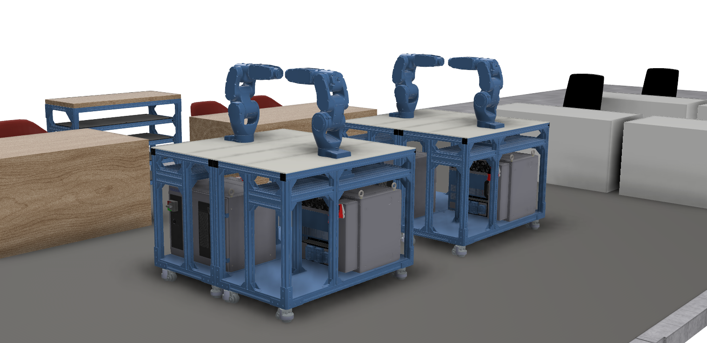
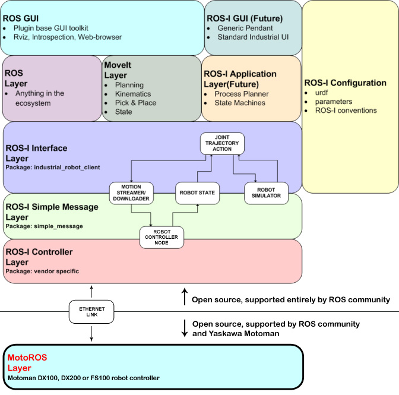

Robot Arms
 Four Yaskawa GP4 robots at the testbed space
Motion Stack and MoveIt
ROS interface with the Yaskawa GP4 uses motoman_driver and ROS-Industrial stack to plan and execute trajectory. The figure below represents the stack. Details and tutorials to setup the driver and interface can be found here.
 Source: http://wiki.ros.org/motoman_driver
MotoROS Layer is setup at the robot controller (YRC1000). Details
ROS-I Interface Layer motoman_gp4_support
Open-source community has a support package for many industrial robots, including GP4.MoveIt Layer motoman_gp4_moveit_config
We developed moveit configuration package for GP4 robots which is used for trajectory planning.
Skills
In v1.0 the robots are skilled to pick and place pallets of LEGO® baseplate and bricks, and manipulate bricks to assemble/disassemble structures.
LEGO® Manipulation
> Simulation